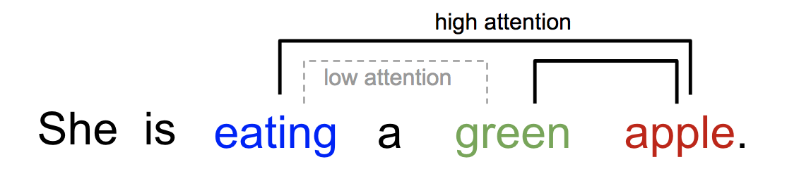
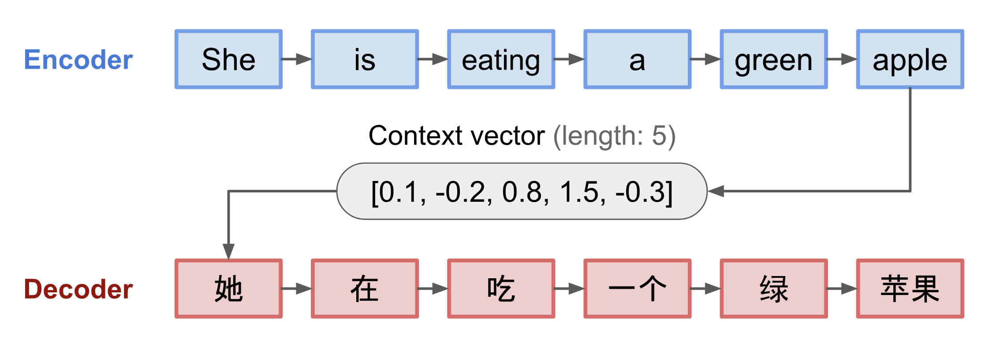
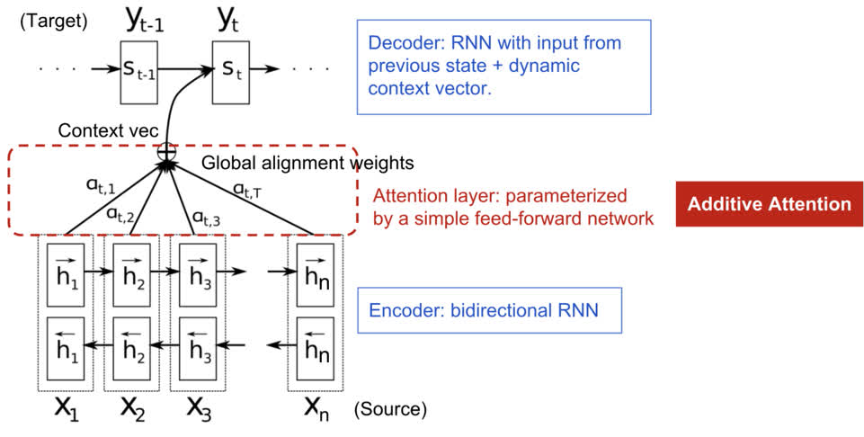
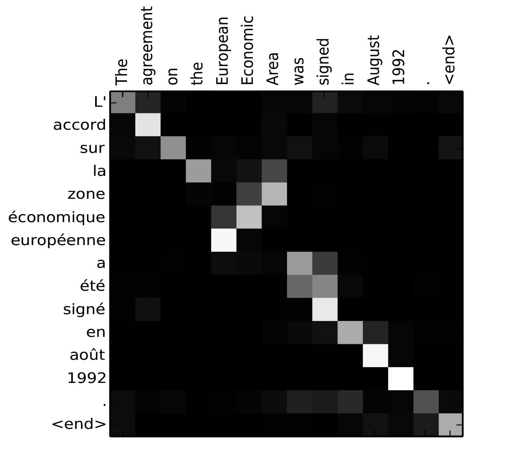

5.1 注意力
创建日期: 2025-04-05
某种程度上来说，注意力是由我们将视觉注意力放在图像的不同区域，或者将一个句子中的单词关联起来而引起的。以下面的柴犬图片为例：
人类的视觉注意力使我们能够以“高分辨率”聚焦于某个区域（例如，查看黄色框中的尖耳朵），同时以“低分辨率”感知周围的图像（例如，雪景背景和服装注意到了吗？），然后调整焦点或进行相应的推理。给定一小块图像，其余像素会提供应在此处显示的内容的线索。我们希望在黄色框中看到一只尖耳朵，因为我们已经看到了狗的鼻子、右边的另一只尖耳朵和柴犬的神秘眼睛（红色框中的东西）。但是，底部的毛衣和毯子不如这些狗的特征有用。
同样，我们可以在一个句子或密切上下文中解释单词之间的关系。当我们看到“吃”时，我们期望很快会遇到一个食物词。颜色词描述了食物，但与“吃”直接相关的可能并不多。

简而言之，深度学习中的注意力可以广泛解释为重要性权重的向量：为了预测或推断一个元素，例如图像中的像素或句子中的单词，我们使用注意力向量估计它与其他元素的相关性（或“关注”，你可能在许多论文中读到过）的强度，并取注意力向量的加权值之和作为目标的近似值。
5.1.1 Seq2Seq 的问题
Seq2Seq 模型诞生于语言建模领域 (Sutskever 等人，2014 年)，关于 seq2seq 的内容可以查看 第 4.4 节 Seq2Seq 的内容。广义上讲，它旨在将输入序列（源）转换为新序列（目标），并且两个序列的长度可以是任意的。转换任务的示例包括文本或音频中多种语言之间的机器翻译、问答对话生成，甚至将句子解析为语法树。
Seq2Seq 模型通常具有编码器-解码器架构，其由以下部分组成：
编码器处理输入序列，并将信息压缩为固定长度的上下文向量（也称为句子嵌入或“思维”向量）。这种表示很好地概括整个源序列的含义。
使用上下文向量初始化解码器以发出变换后的输出。早期的工作仅使用编码器网络的最后状态作为解码器的初始状态。
编码器和解码器都是循环神经网络，比如使用 LSTM 或 GRU 单元：

上图是一个编码器-解码器模型，将 "She is eating a green apple" 翻译成中文“她正在吃一个绿苹果”。
这种固定长度上下文向量设计的一个关键且明显的缺点是无法记住长句子。一旦完成整个输入的处理，它通常会忘记第一部分。注意力机制的诞生（Bahdanau 等人，2015 年）就是为了解决这个问题。
5.1.2 为翻译而生
注意力机制的诞生是为了帮助记忆神经机器翻译 (NMT) 中的长句子。注意力机制发明的秘诀不是从编码器的最后一个隐藏状态构建单个上下文向量，而是在上下文向量和整个源输入之间创建快捷方式。这些快捷连接的权重可针对每个输出元素进行自定义。
虽然上下文向量可以访问整个输入序列，但我们不必担心遗忘。源和目标之间的对齐由上下文向量学习和控制。本质上，上下文向量消耗三条信息：
编码器隐藏状态；
解码器隐藏状态；
源和目标之间的对齐。
下图是 Bahdanau 等人 2015 年提出的具有加性注意机制的编码器-解码器模型：

现在让我们以科学的方式定义 NMT 中引入的注意力机制。假设我们有一个源序列 \(x\) ，长度为 \(n\) ，并尝试输出目标序列 \(y\) ，长度为 \(m\)：
\(x = [x_1, x_2, ... , x_n]\)
\(y = [y_1, y_2, ... , y_m]\)
编码器是双向 RNN (我们也可以选择其它的循环网络)，它有一个前向隐藏状态 \((\overrightarrow{h}_i)^{\mathrm{T}}\) 和一个反向隐藏状态 \((\overleftarrow{h}_i)^{\mathrm{T}}\) 。这两个状态的简单连接表示编码器的状态。其动机是将一个词的注释中包括前面和后面的词。
对于 \(t\) 位置 (\(t = 1, \ldots , n\)) 的输入单词，解码器的隐藏状态 \(s_t = f(s_{t-1}, y_{t-1}, c_t)\) ，其中上下文向量 \(c_t\) 是输入序列隐藏状态与对齐分数相乘的加权和：
\(c_t = \sum_{i=1}^{n}\alpha_{t, i}h_i\)
\(\alpha_{t, i} = align(y_t, x_i) = \frac{exp(score(s_{t-1}, h_i))}{\sum_{j=1}^{n}exp(score(s_{t-1}, h_j))}\)
对于输入位置 \(i\) 和输出位置 \(t\) 的 \(y_t, x_i\) 组合，基于它们的匹配程度，对齐模型会分配一个分数 \(\alpha_{t, i}\) 。\({\alpha_{t, i}}\) 组合定义了每个输入隐藏状态在每个输出中应该被考虑的权重。在 Bahdanau 的论文中，对齐模型 \(\alpha\) 由具有单个隐藏层的前馈网络进行参数化。并且该网络与模型其它部分联合训练。因此，假设使用 tanh 作为非线性激活函数，则得分函数具有以下形式：
其中 \(v_a\) 和 \(W_a\) 都是对齐模型中可以学习的权重矩阵。
对齐分数矩阵是一个很好的副产品，可以明确显示源词和目标词之间的相关性：

法语 "L'accord sur l'Espace économique européen a été signé en août 1992" 翻译成英语 "The agreement on the European Economic Area was signed in August 1992" 的对齐矩阵。